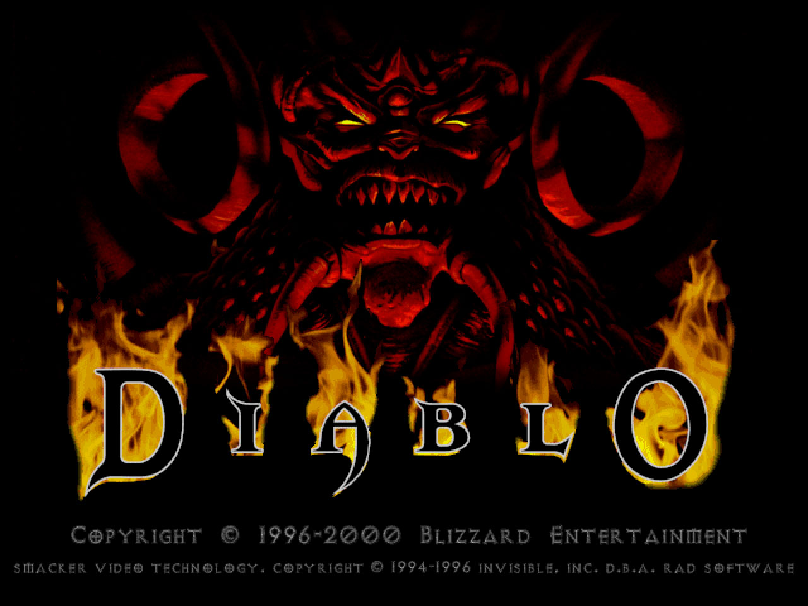

The Diablo Series
The "Diablo" game series consists of the three very well known and popular games; Diablo 1, 2 and 3.
Diablo 1
The first game in the series, releasaed way back at the end of 1996. Diablo had the player battle against evil through sixteen levels of random generated dungeons, before finaly descending into Hell to face Diablo himself.
Diablo 2
Released in the year 2000, "Diablo 2" takes place after the first game in the series. The story is told through four acts and is continued further in the expansion "Lord of Destruction".
Diablo 3

The third and most recent addition to the series, Diablo 3 set a record for the fastest selling PC game at 3.5 million copies in 24 hours. The game is set 20 years after Diablo 2 and the story is told through 4 acts aswel as an expansion "Reaper of Souls".